|
|
|
|
|
Sea-Monkey Messenger
|
UI Specification
|
|
Address Book
|
Last Modification:
|
Open Issues
- Ability to search across all local address books?
- Should we continue to have multiple personal Address Books or
one personal Address Book with multiple Categories?
Summary
This document outlines the major changes to the Address Book
component from Communicator version 4.5 to 5.0. Please see the
Nova Address
Book UE spec for a more detailed description and history.
Goals
- Provide a place for users to store contact information for
business associates, colleagues, friends and family.
- Provide an easy method for adding message senders to the
user's Address Book.
- Provide a way for users to quickly select recipients for an
email message.
- Provide a quick and convenient method of viewing contact
data.
- Provide a quick and convenient method of editing existing
contact data.
- Provide a method to find/look up people in available
directories (Netcenter, LDAP).
- Allow the ability to use this information in other places.
Definitions
- Address Book
- Main three pane window that allows users to manage their
address book entries and search available LDAP directories. Users
can create new cards, edit existing cards and delete cards. Users
can create multiple personal address books and move address book
cards and list between them. Users can also search LDAP
directories, view the results in this window, and add those
results to one of their personal address books. The Address Book
component is accessible from the "Tasks" menu of each of the
Communicator components (Navigator, Messenger, etc.). An Address
Book icon will also appear on the Task
Bar within the "Quick Access" area. The Task Bar is included
on Navigator and Messenger, but not the Address Book.
- Bucket
The bottom text field widget in the Select Addresses Dialog
where the selected names are listed.
- Card
A single address book entry.
- Card Dialog - Display
The non-editable dialog which displays the detailed information
for a selected Address Book entry/card.
- Card Dialog - Edit
- The editable dialog which displays the detailed information
for a selected Address Book entry/card.
- Card View Pane
The right bottom (in a 3 pane view) pane of the address book
which displays the detailed information for a selected address
book entry/card.
- Directory Pane
- The left pane of the address book which lists the names of
the address books and LDAP directories available to the user.
This pane is can be collapsed by the user.
Pop-up Selector
- The dialog box that is displayed when multiple matches to
an address have been found.
- Results Pane
The right (right top in a 3 pane view) pane of the address book
which lists the contents of an address book or offline directory,
or lists the search results from an LDAP directory. This pane is
always visible.
-
- Select Addresses Dialog
The modal dialog that allows users to select addresses for a
mail compose window. Accessible from the Mail Compose window
only.
-
Target User
The Address Book needs to be accessible to a broad range
of users. It should be simple and accessible to Novice,
Intermediate and Advanced users.
User Tasks
|
Basic Tasks
|
- Using the Address Book or Select Addresses Dialog
to address a message (To, Cc, or Bcc).
- Viewing an individual card entry within the 3 pane
mail Card View Pane or Card View Dialog.
- Adding a new individual address book
entry/card.
- Editing an existing individual address book
entry/card.
- Deleting an existing individual address book
entry/card.
- Searching for an address using an LDAP
directory.
- Adding a Sender to a personal Address Book
|
|
Intermediate Tasks
|
- Adding all recipients to a personal Address
Book.
- Moving card entries from one personal Address Book
to another.
- Adding a new mailing list address book entry.
- Editing an existing mailing list address book
entry.
- Deleting an existing mailing list address book
entry.
- Adding multiple personal address books.
- Performing an advanced LDAP directory search.
- Adding and LDAP directory search result to a
personal Address Book.
|
|
Advanced Tasks
|
- Synch with a hand held computer (Palm Pilot or
other).
- Adding additional LDAP directories.
|
Design Cheatsheet
Address Book Window Access
Access points in the main mail window for the Address
Book: (this section still under construction)
|
Toolbar
|
Menu
|
Msg Context Menu
|
|
"Address Book" button on Task Bar "Quick
Access".
"Address" button on Toolbar of Mail Composition window
opens the "Select Addresses Dialog".
|
"Tasks" (replaces "Communicator") menu
|
(Right mouse click)
None
|
"Card" Dialog Access (Editable and Non-editable)
|
Toolbar
|
Menu
|
Msg Context Menu
|
- "New Card"
- "Edit" from Address Book window.
|
- "New Card..." from the "File" menu, Address Book
Window.
- Properties..." from the "Edit" menu, Address Book
Window.
- "Add Sender to Address Book..." from the "Message"
menu, Open Message Window.
- "Add All to Address Book..." from the "Message"
menu, Open Message Window.
|
(Right mouse click)
|
Design Details
Address Book Window
The Address Book consists of 3 panes, a toolbar and a menu bar.
The left pane (Directory Pane) displays the available Address Books
and LDAP Directories. Address Books can be expanded to display the
mailing lists contained within them (if any).
Selecting an Address Book displays its entire contents in the top
right pane (Results Pane).
Selecting an individual entry from the Results Pane, displays
detailed information about the entry in the low right pane (Card View
Pane). This third pane can be collapsed.
|
Current (4.5):
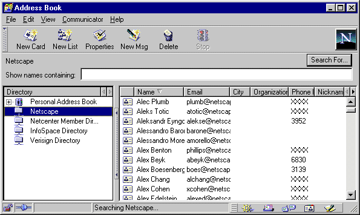
|
|
Proposed (5.0):
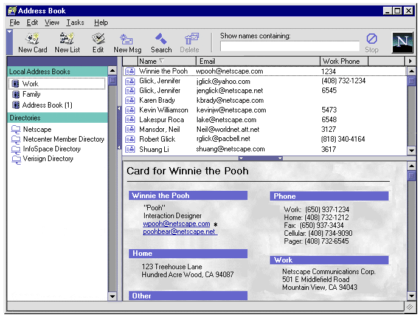
|
|
Changes:
- Address Book is now a three pane view. The new third
pane contains the detailed information about an AB
card/entry. The user doesn't have to open the Card View
Dialog to see all the information for an entry. This
third pane can be collapsed. All the data contained
within the third pane can also be viewed in it's own
separate dialog by double clicking on the desired
card/entry in the Results Pane (the top right pane in the
3 pane view). This opens the "Card Dialog - Display".
dialog.
- A new "Card Dialog - Display" is
added. See below. By double clicking on a card/entry in
the AB, the "Card Dialog - Display" is opened. This view
provides the users with an easy to read, quick summary of
the information contained in a card/entry. Fields which
contain no data are not show. Data entry fields, with or
without data, are not shown. Category headers (i.e.,
"Home Address") that do not have data included with any
of their associated fields are not shown. This makes the
information on the Card Dialog less cluttered, more
readable and easier to find the data that is important to
the user. The user only sees the data that they chose to
enter (instead of a bunch of empty text fields).
- Local/Personal Address Books are separated from the
LDAP Directories (a different Sidebar component/channel).
Hopefully, by separating them, this will help users
understand that there is a different between these two
type of "Address Books". In addition, hopefully this will
help users understand that they can have more than one
personal AB.
- The name of the default local Address Book is changed
from "Personal Address Book" to "Address Book (1) (actual
name TBD).
- "Search for" moved from the second collapsible area
to the Toolbar as "Search". "Search" is not directly
associated with the search text field. It brings up it's
own separate (advanced) search dialog. With the way this
feature was implemented in 4.5, it gave the users the
impression that once they entered data into the search
text field, they needed to click "Search for" to start
the search. This button actually takes users to a
completely separate advanced search dialog.
- Reordering of Toolbar buttons and updated graphics to
match the current 5.0 UI goals.
Note: "Search" is disabled unless an LDAP directory is
selected. When an LDAP directory is selected and the user
clicks the "Search" button, an advanced search dialog is
opened allowing the user to perform a more specific search
on an LDAP directory. Searches can be performed on local
Address Books by using the search text field area on the
Address Book Window.
|
Card Dialog - Display
This dialog currently does not exist in 4.5.
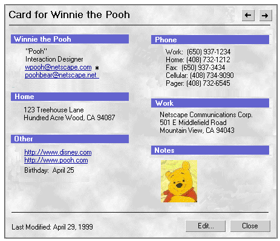
- When the user double clicks on an Address Book card/entry, a
"Card Dialog - Display" is opened. This is a similar view to what
is displayed in the Address Book third pane. This view provides
the users with an easy to read, quick summary of the information
contained in a card/entry. Fields which contain no data are not
show. Data entry fields, with or without data, are not shown.
Category headers (i.e., "Home Address") that do not have data
included with any of their associated fields are not shown. This
makes the information on the Card Dialog less cluttered, more
readable and easier to find the data that is important to the
user. The user only sees the data that they chose to enter
(instead of a bunch of empty text fields).
- The "Edit" button can be used to edit the card/entry
information. When edit is clicked, the dialog changes to the
Card Dialog - Edit Mode.
- The "Forward" and "Back" arrow buttons (upper right corner)
are used display the next or previous card/entry in the user's
Address Book. Only One "Card Dialog" is open at one time, so the
next/previous data replaces the current data in the dialog.
- Users can click directly on the primary or secondary email
addresses to launch a mail message to that person (at the selected
account).
- Users can click directly on a web page link to launch the web
page in Navigator.
- The Notes field is an Ender field for 5.0, so the user can add
html formatting or pictures (gif or jpg) to a AB card. You could
have a picture of the address book entry person within their
entry/card. (Note: not sure if this is doable yet).
Card Dialog - Edit
When a user adds a new address book card or modifies an existing
card, the "Card Dialog - Edit Mode" dialog is used. This dialog is a
set of tabs in which the user can enter information about a
contact.
A list of fields for the 5.0 Address Book can be found at:
Address
Book Fields. This document compares the Communicator 5.0 Address
Book fields to the current Netcenter Address Book fields.
|
Current (4.5):
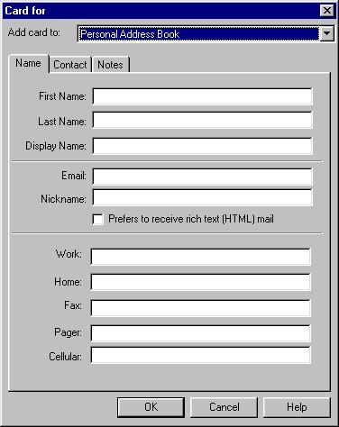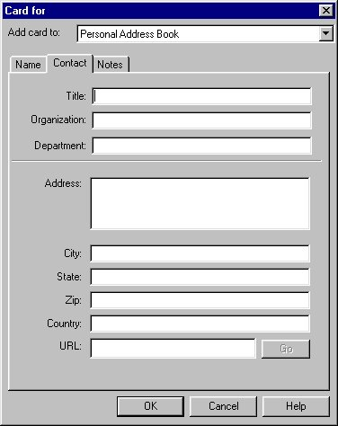
|
|
Proposed (5.0):
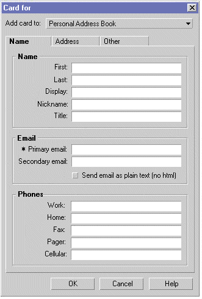
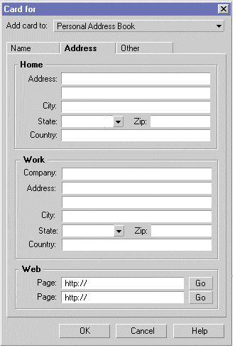
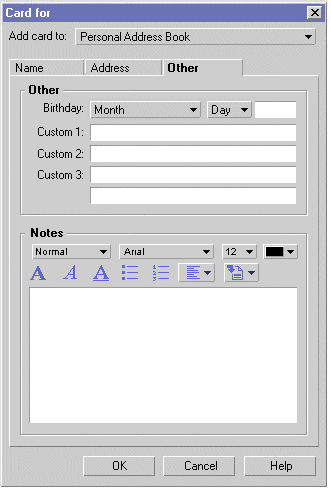
|
|
Changes:
- New Tabs. Change from "Name", "Contact" and "Notes"
to "Name", "Address" and "Other".
- The most important information and frequently
accessed information (Name Info, Email Info, Phone Info)
is available to the user on the first "Name" tab.
- Home and Business address information as well as web
page information can be added to the "Address" tab.
- The "Web Page:" text area on the "Address" tab,
contain the default text "http://". This helps the user
understand what type of information goes in this field
and is most likely the way the address they will enter
will begin. If the user pastes an address into this field
the "http:" should not be duplicated.
- The label for the tab currently with focus is
bold.
- Group box title is bold.
- The Notes field on the "Other" tab is an Ender
widget. The user can enter html and/or graphics (gif or
jpg) to this field.
- For the checkbox on the "Name" Tab, "Prefers to
receive rich text (html) mail" changed to "Send email as
plain text (no html)". The default is that this box is
NOT checked. (change per Sol's request).
Note: When editing an Existing AB
card/entry (versus a New card) the "Add Card to:"
drop down menu is not available and is replaced with status
text "Location: Name of AB".
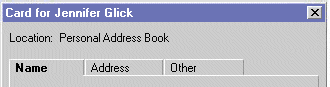
|
Address Selection Dialog
This is a modal dialog that allows users to select addresses for a
mail compose window. It is accessible from the Mail Compose window
only, by clicking on the "Address" button on the Toolbar or "File
-> Select Addresses...".
|
Current (4.5):
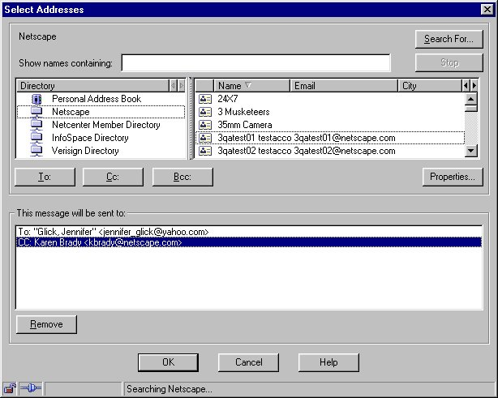
|
|
Proposed (5.0):
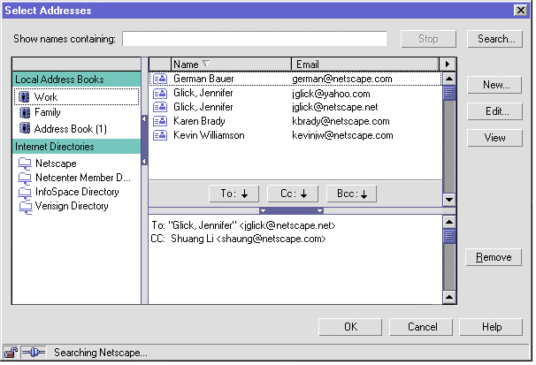
|
|
Changes:
- General cleanup and reorganization of dialog to
try and make the dialog smaller and to make it's
functionality more clear.
- "New" added to dialog. Users could add a new Address
Book entry from this dialog (the Card Dialog - Edit Mode
would be opened). Still not sure if we will keep this
feature. The purpose of this dialog to quickly add
recipients to a mail message. Do we want users to be able
to add AB entries from here?
Note: The "bucket" area (lower pane on the right side)
cannot be shrunken down to smaller than 3 lines. This is for
several reasons. First, if the separator bar is dragged all
the way to the bottom, the "To, Cc, and Bcc" buttons point
to nothing. Second, the "Select Addresses Dialog" is more
often used by novice users and they may not know how to get
the "basket" area back once it is no longer visible.
Note: "Search" is disabled unless an LDAP directory is
selected. When an LDAP directory is selected and the user
clicks the "Search" button, an advanced search dialog is
opened allowing the user to perform a more specific search
on an LDAP directory. Searches can be performed on local
Address Books by using the search text field area on the
Address Book Window.
|
Mailing List Dialog
If a user is frequently sending email to the same group of people,
a Mailing List provides an easy way for users to send mail to that
group of recipients without having to add each recipient to a Mail
Composition window. Once a Mailing List has been set up, the user
needs only to type the name or nickname of the Mailing List within
the addressing area of a Mail Composition window and all the members
of the Mailing List are added to the message.
|
Current (4.5):
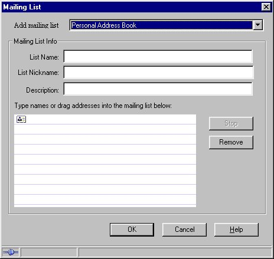
|
|
Proposed (5.0):
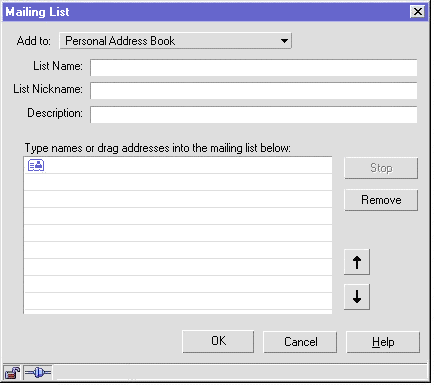
|
|
Changes:
- The Mailing List area should look more like a 3D list
box, instead of its flat appearance in 4.5
- When the Mailing List dialog is opened, it should
default to a location just off the side of the Address
Book, if possible (instead of on top of the AB), so that
drag and drop from the AB to the Mailing List dialog is
easier. Otherwise, users must reposition the Mailing List
or AB before they can drag and drop.
- Users can reorder Mailing List recipients by
highlighting a recipient and using the Up and Down
arrows, or they can use the "card" icon to drag and drop
the recipient to a new location in the List.
- Entries in a Mailing List are displayed and appear in
a mail message in the order in which they were added to
the mailing list. We discussed the possibility of giving
users the ability to VIEW their mailing lists
alphabetically or by order added. But, when mail
is sent to a mailing list, recipients will always be
displayed in the mail message in the order they were
added regardless of how the user choose to view the
entries. Since order in which addresses are displayed in
a message is very important to certain people (signifies
a level of importance), it was thought that it might be
deceiving to users if they could see their mailing list
in alphabetical order, but weren't aware that the order
in the sent message would be different.
|
A mailing list name must be unique to its Address Book.
Mailing lists appear in the left pane under their parent Address
Book.
Pop-up Selector Dialog
|
Current (4.5):
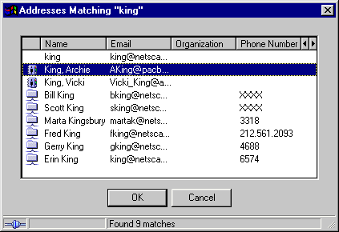
|
|
Proposed (5.0):
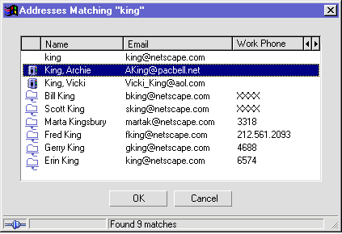
|
|
Changes:
- Default column headers that the user sees should be
"Name", "Email", and "Work Phone". Most users do not
adjust the columns to change the default view, so we
should have the dialog default to columns that are the
most useful to users in distinguishing between
entries.
Note: If users do change the columns shown, this
dialog should remember the changes and default to that view
when the dialog is shown again.
No major changes for 5.0 (except for new widget and icon
look).
|
Cross Address Book Window/Dialog Issues
This change applies to both the Address Book window and the Select
Addresses dialog.
If the user selects an LDAP directory, the text "Type name to
search for here" should appear (in a slightly grayed color) in the
search text edit field. In 4.5, when a user selects an LDAP
directory, the Results Pane remains empty. This confused many users
who were not aware that they needed to type a name for which they
wanted to search into the search text edit field.
If no matches are found for an LDAP directory search, the "No
Matches Found" text should appear in the Results Pane instead of the
Status Bar so that it is more visible to users (who often ignore the
Status Bar). Is this doable?
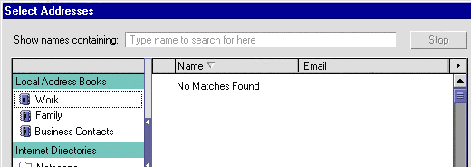
Menu Items
The following details the Address Book window menus and their
associated content.
|
File
|
Edit
|
View
|
Tasks
|
Help
|
|
File
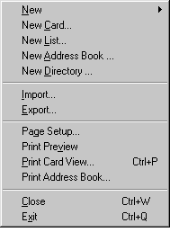
Added
Print Setup...
Print Preview...
Print Card View...
Print Address Book...
|
File New
Removed
Blank Page
-------------
Page from Template...
Page from Wizard
(Ender not included for 5.0)
|
|
|
Edit
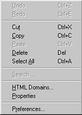
Changes
"Search for..." changed to "Search..."
Question: Is "HTML Domains..." staying?
|
Comment: Users should be able to "Cut" or "Delete"
an Address Book Card and "Undo" should be available to get
the Card back.
How many levels of Undo?
|
|
|
View
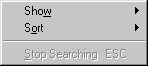
|
View - Show
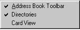
Removed
Floating Component Bar
Added
Card View (3rd pane)
Changed
"Address Books" changed to "Directories"
|
View - Sort
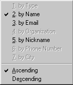
|
|
Tasks
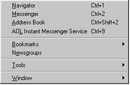
Removed
Composer
Calendar
Moved
Address Book (moved up from below "Newsgroups")
|
Tasks - Tools
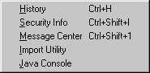
Issues
Will "Tools" still be included in Communicator 5.0?
|
Tasks - Bookmarks
Displays the user's bookmarks
Tasks - Window
Displays the user's open Communicator windows.
|
|
Help
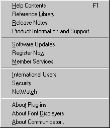
|
Issues
Will any of this change?
Simone?
|
|
Context Menus
Context Menus for the Address Book window.
|
Search Text Field
Undo
----------
Cut
Copy
Paste
----------
Select all
|
Directories Pane - Address Book, Mailing List
(within AB) or Directory selected.
New Address Book...
New Directory...
------------------------
New Card...
New List...
------------------------
Cut
Copy
Paste
Delete
Delete From All Lists
------------------------
Properties
Question:
What does "Delete From All Lists" do? I couldn't get
this menu item to not be grayed out.
Should "Properties" be changed to "View" and "Edit"?
|
|
Results Pane - card/entry or mailing list
selected.
New Message...
------------------------
New Card...
New List...
------------------------
Cut
Copy
Paste
Delete
Delete From All Lists
------------------------
Properties
Question:
What does "Delete From All Lists" do? I couldn't get
this menu item to not be grayed out.
Should "Properties" be changed to "View" and "Edit"?
|
Card View Pane (bottom right pane in a 3 pane
view)
New Message
-----------------
New Card...
New List...
------------------------
Cut
Copy
Paste
Delete (gray if LDAP Dir)
Delete From All Lists
------------------------
View
Edit (gray if LDAP Dir)
Question:
What does "Delete From All Lists" do? I couldn't get
this menu item to not be grayed out.
Should "Properties" be changed to "View" and "Edit"?
|
Closed Issues
- What are the limitations of the Address Book database for
5.0? 10k contacts per directory.
- Does Navigator have its own Address Book (is the AB a
separate application from Messenger)? Design the address book
so that it does not require all the Messenger code. That's just
the general mozilla/5.0 componentization approach. In general,
this allows us to address issues like component bundling based on
market need rather than feasibility. Phil Peterson 3/99.
Address book should be a component accessible by Navigator. (One
related issue - if the address book is a large size, then the
Navigator folks may not want it to be included in the stand alone
Navigator download.) Sol Goldfarb 3/99.
- Do we want an "All Received Mail" Address Book? Anyone who
sends you an email is automatically added to this AB? What info
would it store: name, email, subject line? I think we do want
recent senders and recent recipients, but it's a P2-ish feature.
Not sure what we'd do with the subject line. Phil and Sol
3/99.
- Address Book button on the main Messenger toolbar, or on
the Task Bar? An Address Book icon will appear on the
Task Bar
within the "Quick Access" area. The Task Bar is included on
Navigator and Messenger, but not the Address Book.
- Should the word "Properties" in address book UI be replaced
with "Edit"? For the time being, the Address Book will use the
term "Edit" instead of "Properties" in locations were the
command/button is used to actually "Edit" an Address Book card.
When the data is available only for viewing, the term "View" will
be used. For LDAP directories, the term "Properties" will still be
available from a right mouse/key click mouse menu. 4/30/99 - Mail
Issues Meeting.
Archived Documents
Change History
Nova's
Address Book Spec
|
|
|